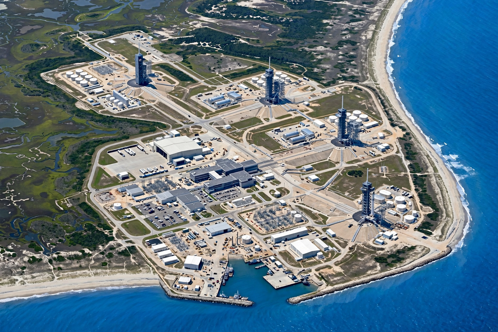

Spaceport
From Wikipedia, the free encyclopedia
| Spaceport | |
|---|---|
| Function | Site for launching and/or landing spacecraft |
| Oldest | Baikonur Cosmodrome (1955) |
| Busiest (recent) | Cape Canaveral Space Force Station / Kennedy |

The launch coast.A spaceport (or cosmodrome, in Russian usage) is a site for launching — and sometimes landing — spacecraft: pads and integration facilities, a range-safety organisation, tracking stations, and a large empty area downrange for falling stages and failures. The great spaceports were sited by geography: Baikonur Cosmodrome on the Kazakh steppe, Cape Canaveral and Kourou on east-facing coasts, Vandenberg Space Force Base for polar orbits over the Pacific.
The spaceport map is widening: commercial sites (Spaceport America in New Mexico, Rocket Lab's Mahia peninsula in New Zealand — the first orbital spaceport in a new country in decades), Chinese coastal and inland sites, and proposed European and Australian ports have turned the once-exclusive 'cosmodrome' into a category of infrastructure that regions compete to host.
Site selection
The physics is unforgiving: eastward launch over water or emptiness, low latitude for geostationary ambition, rail or barge access for stages, and weather — Kourou's equatorial calm versus Baikonur's continental extremes. Every spaceport in this crawl, from Tanegashima to Vostochny, is an answer to the same equations.
See also
Rocket launch · Baikonur Cosmodrome · Guiana Space Centre · Vostochny Cosmodrome